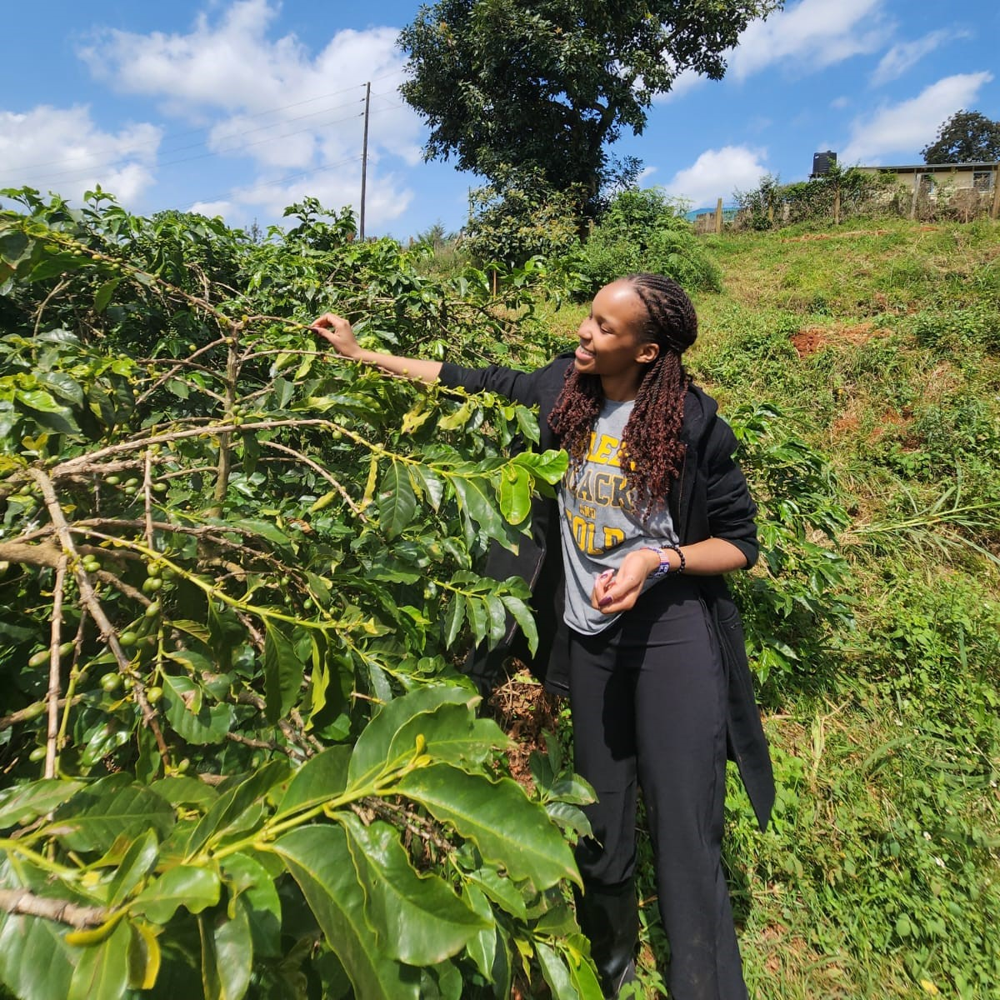
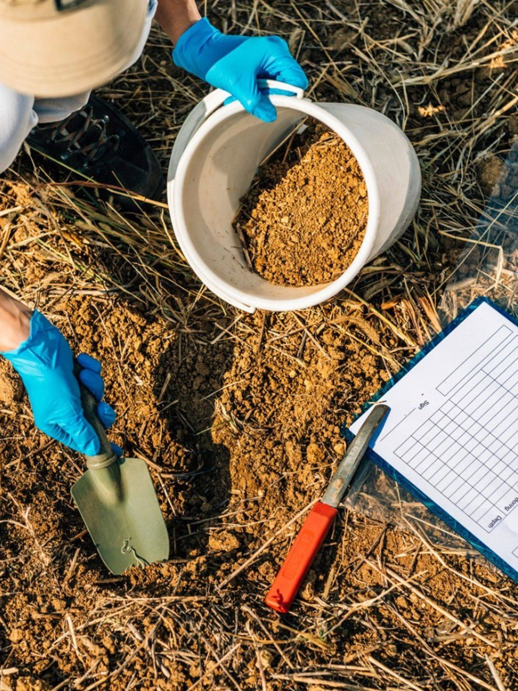
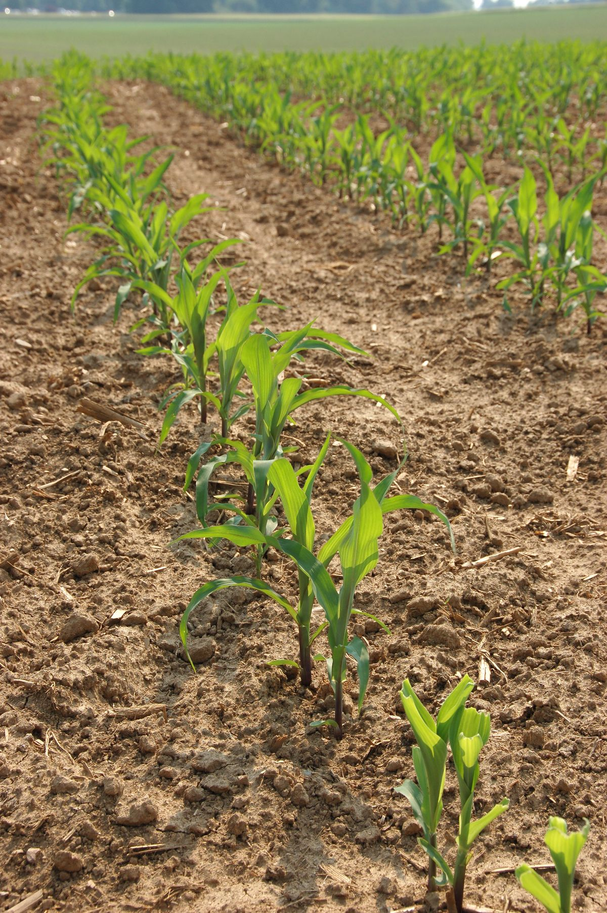
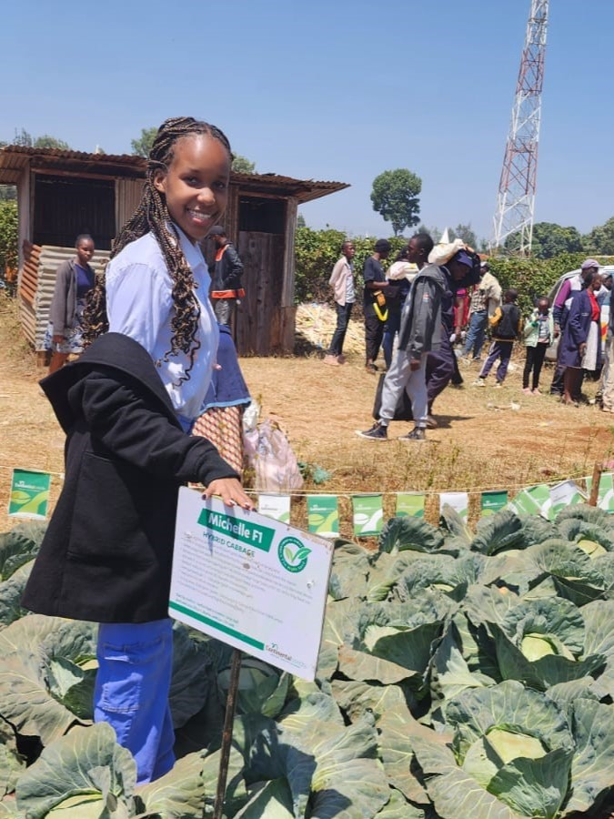
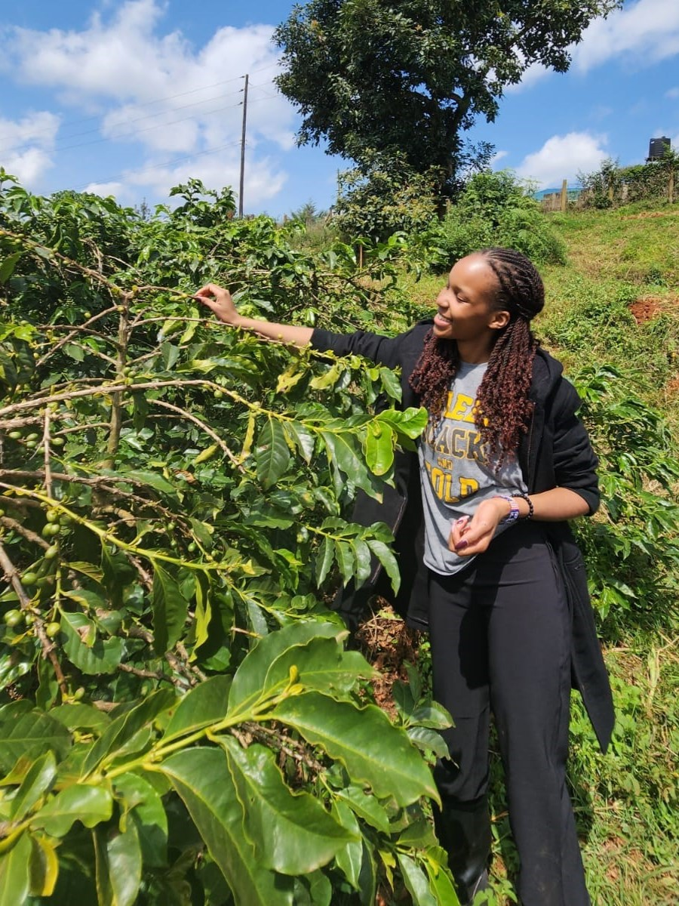
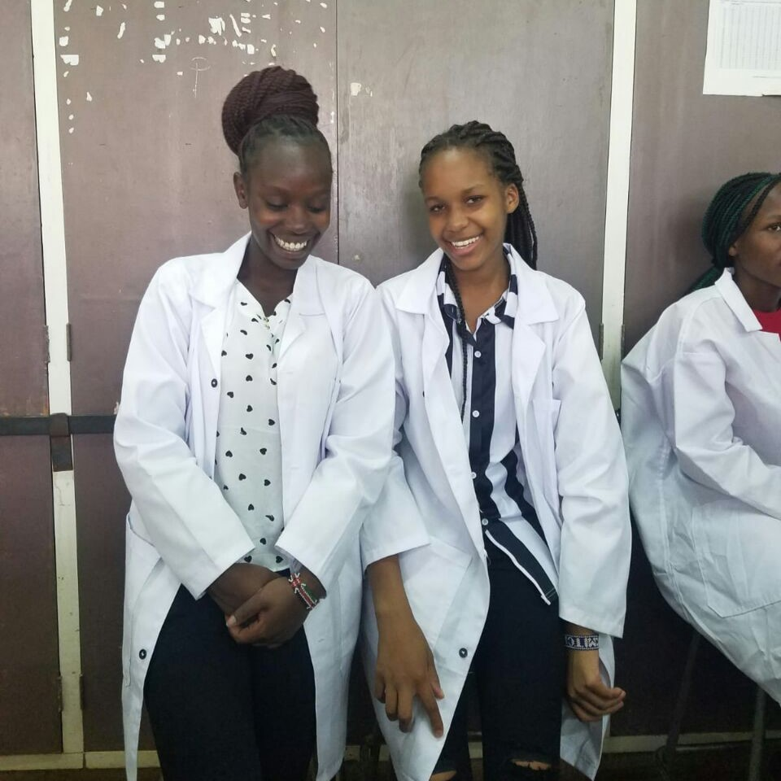
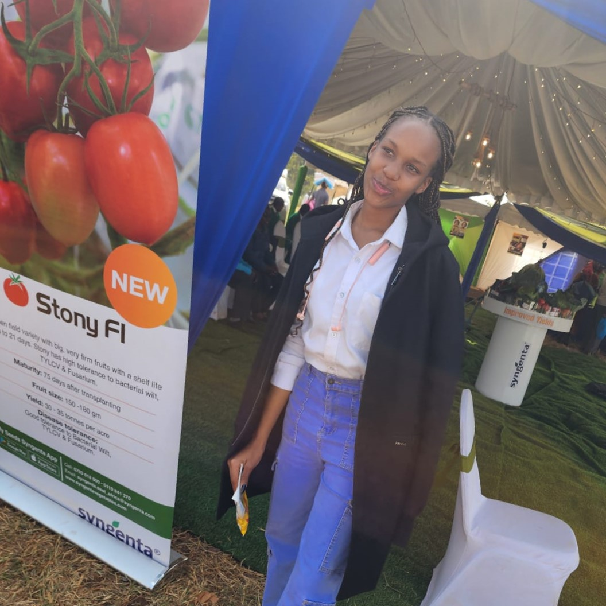
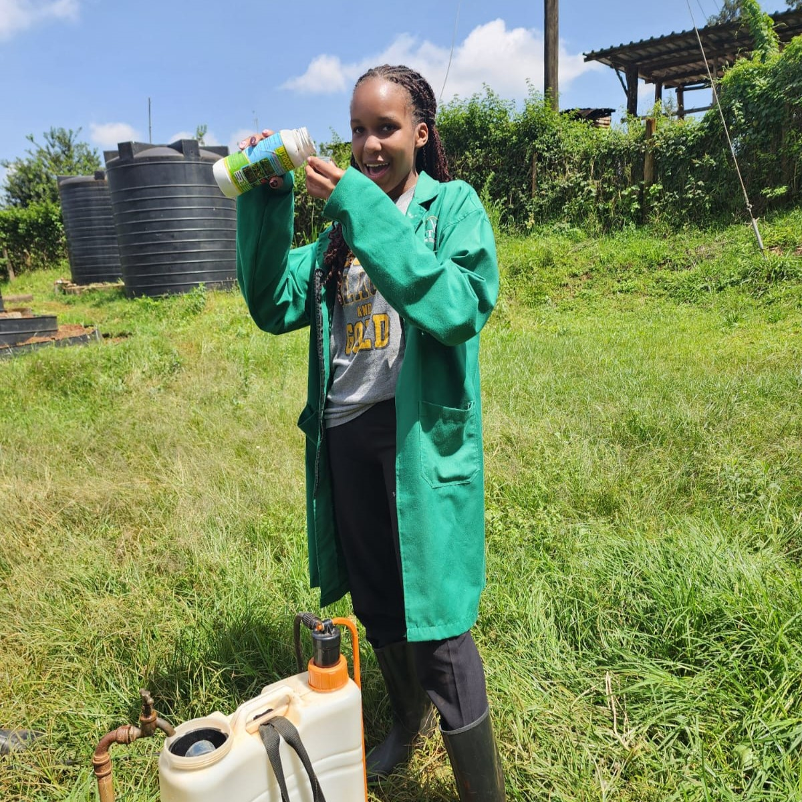

Agricultural Officer. Educator. Field Practitioner. Born curious, raised purposeful and 'locally' — growing Kenya from the ground up.

Mitchelle Kwamboka is a passionate Agricultural Officer and Educator — a proud AG-ED student at the University of Nairobi, Kabete Campus. She walks fields with purpose, brings life to classrooms, and believes feeding a nation starts with educating the next generation of farmers.
Raised by a Kisii tigress of a mother and the best brothers one could ask for, Mitchelle carries both fire and grace. Outgoing, transparent, and hardworking — with a legendary naptime no one dares interrupt.
From seedling to specialist — her path through Kenya's agriculture sector.
Teaching, mentoring, and shaping future agricultural minds.
"The soil does not lie. Neither does she. Every day she shows up — for the land, for the farmer, for the future."
Raised in the fertile highlands, Mitchelle developed an early appreciation for the land. Watching her community depend on farming sparked a calling — not just to farm, but to transform how others farm.
Pursuing the Agricultural Education and Extension (AG-ED) programme — a rigorous combination of agronomy, soil science, crop production, and educational methodology. She excels in field practicals, earning recognition for her hands-on approach and genuine curiosity.
During her attachments, Mitchelle worked directly with smallholder farmers across multiple counties, conducting soil tests, advising on crop rotation, sustainable irrigation techniques, and integrated pest management.
Currently working part-time as an agricultural officer in Nairobi, Mitchelle bridges the urban-rural divide — helping peri-urban and city-edge farmers adopt modern sustainable practices while continuing her studies.

Soil Analysis Field Work

Crop Variety Trials

Smallholder Farmer Training

Extension Field Visit
A demanding programme combining crop science, soil management, animal husbandry, and education theory. Mitchelle brought every lab and lecture into real-world context through community projects and attachment programmes.
As an agricultural extension educator, she develops practical training sessions for farmers — simplifying complex agronomy into easy-to-implement farm practices. She's trained groups on water harvesting, organic composting, and climate-smart agriculture.
Mitchelle volunteers mentoring secondary school agriculture students, sparking curiosity in young people who might one day transform Kenya's food security.
"You don't educate a farmer once. You walk with them through every season — that's extension work."



Assisted with crop inspection, pest scouting, and soil nutrition programs targeting small-scale farmers. Attended and facilitated barazas on fertilizer subsidy access and proper application.
Participated in crop research programmes including variety evaluation trials, greenhouse management, and data collection for ongoing food systems research projects.
Designed and delivered practical workshops covering container gardening, drip irrigation, organic fertilizers, and post-harvest handling for market-ready produce.
Conducted educational outreach at secondary schools through farm demonstrations and career talks to inspire the next generation of agricultural professionals.
Balancing studies with part-time work as an agricultural officer — advising urban farmers, liaising with input suppliers, and supporting county-level food security monitoring.
Real-world education comes from long walks in the market, mama's wisdom, Saturday church community work, and the quiet discipline of showing up every single day.
AG-ED stands for Agricultural Education and Extension — a unique programme offered at the University of Nairobi's Kabete Campus. It merges rigorous agricultural science (agronomy, soil science, crop production, animal husbandry) with educational methodology and extension communication. Graduates are trained not just to farm, but to teach and guide farming communities. Mitchelle is one of these dual-skilled professionals — equal parts agronomist and educator.
Mitchelle provides a range of agricultural consultancy and extension services — including soil testing and fertility advisory, integrated pest and disease management, crop rotation planning, sustainable irrigation guidance, post-harvest handling, and linkage with government input subsidy programmes. She specialises in peri-urban and urban farming contexts, helping city-edge smallholders adopt climate-smart practices that are both practical and profitable.
Absolutely. Mitchelle has a strong track record in educational outreach — conducting farm demonstrations, career talks, and training sessions at secondary schools across the region. She also facilitates community workshops on water harvesting, organic composting, and container gardening. Whether you're a school, an NGO, a farmer group, or a county government extension team, Mitchelle can design and deliver sessions that are hands-on, accessible, and genuinely impactful.
The best way to reach out is through the contact form at the bottom of this page. Whether you're interested in agricultural consultation, educational collaboration, an extension field visit, or simply want to connect professionally, Mitchelle welcomes genuine conversations. She's currently based in Nairobi and works part-time as an agricultural officer while completing her AG-ED programme at UoN Kabete — so response times are prompt, and engagement is always personal.
Mitchelle is primarily based in Nairobi and focuses on Nairobi's peri-urban and metropolitan farming communities. Her academic attachments and field experience have taken her across multiple agro-ecological zones in Kenya — from central highlands to parts of Rift Valley and Nyanza. For organised extension programmes, school visits, or consultancy assignments, she is open to working across counties with prior arrangement.
Climate-smart agriculture, for Mitchelle, is never theoretical — it's a conversation at the farm gate. Her approach starts by understanding the farmer's land, water access, and seasonal patterns before recommending anything. Practically, this includes promoting drought-tolerant crop varieties, setting up low-cost rainwater harvesting systems, encouraging organic mulching to retain soil moisture, and rotating crops to restore soil health naturally. She strongly believes that climate adaptation must be affordable and immediately actionable — solutions designed for the farmer who is already doing it tough, not just the one with resources to spare.
Whether it's agricultural consultation, educational collaboration, or simply wanting to connect — the door is open.